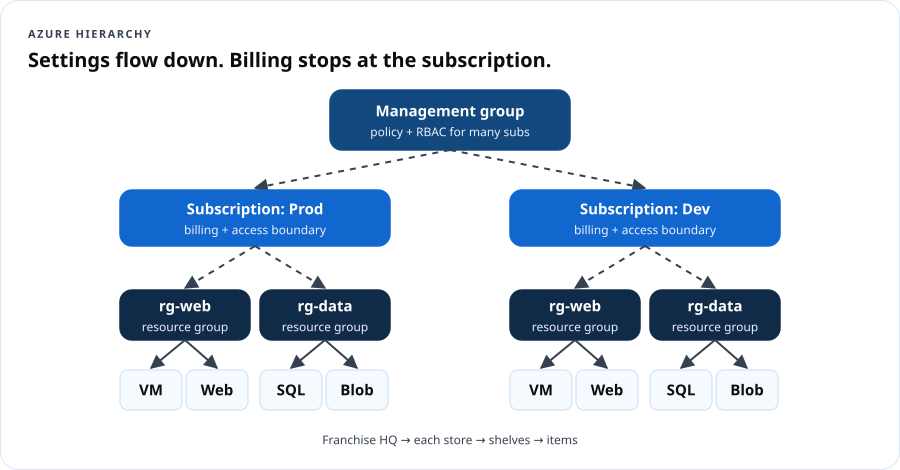
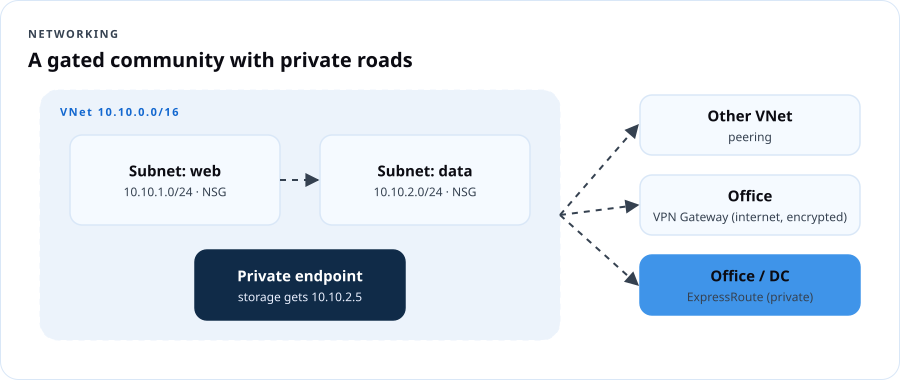
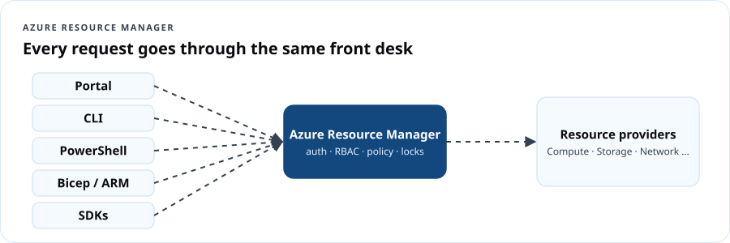

AZ-900 Azure Fundamentals
Course overview
AZ-900 is Microsoft's entry certification for Azure. It proves you can describe cloud concepts, Azure's architecture and services, and how Azure is managed and governed. You don't need to be technical to pass it, but you will leave able to talk shop with technical people.
This course follows Microsoft's current skills outline (as of July 20, 2026) line by line, then adds the DCT layer: plain-language translations, real scenarios, and hands-on labs so the vocabulary sticks.
The exam at a glance
| Item | Detail |
|---|---|
| Exam | AZ-900: Microsoft Azure Fundamentals |
| Credential | Microsoft Certified: Azure Fundamentals |
| Passing score | 700 (scale 1–1000) |
| Price | $99 USD in the United States (varies by country; confirm at checkout) |
| Expiration | Fundamentals certifications do not expire |
| Domains | Cloud concepts 25–30% · Azure architecture & services 35–40% · Management & governance 30–35% |
| Free prep | Official study guide · Free practice assessment · Exam sandbox |
Learning outcomes
You will be able to:
- Describe cloud computing, shared responsibility, cloud models and the consumption-based model.
- Explain the benefits of the cloud: availability, scalability, reliability, predictability, security, governance, manageability.
- Classify services as IaaS, PaaS or SaaS and pick the right one for a scenario.
- Describe Azure regions, availability zones, resource groups, subscriptions and management groups and how they nest.
- Compare Azure compute, networking and storage options and choose between them.
- Describe Microsoft Entra ID, authentication methods, Conditional Access, RBAC, Zero Trust, defense in depth and Defender for Cloud.
- Describe cost factors, the pricing calculator, Cost Management and tags.
- Describe Purview, Azure Policy, resource locks, the portal, Cloud Shell, CLI, PowerShell, Arc, IaC and ARM.
- Describe Advisor, Service Health and Azure Monitor (Log Analytics, alerts, Application Insights).
Syllabus
| # | Lesson | Exam domain | Time |
|---|---|---|---|
| 1 | What is cloud computing? | Cloud concepts | 90 + 30 lab |
| 2 | Benefits of the cloud and service types | Cloud concepts | 90 + 30 lab |
| 3 | Azure's core architecture | Architecture & services | 90 + 45 lab |
| 4 | Compute and application hosting | Architecture & services | 90 + 60 lab |
| 5 | Networking | Architecture & services | 90 + 45 lab |
| 6 | Storage, file movement and migration | Architecture & services | 75 + 45 lab |
| 7 | Identity, access and security | Architecture & services | 90 + 45 lab |
| 8 | Cost management | Management & governance | 75 + 30 lab |
| 9 | Governance, compliance and deployment tools | Management & governance | 75 + 45 lab |
| 10 | Monitoring + exam readiness | Management & governance | 90 (incl. practice exam) |
Cloud From Scratch — live 6-session map
For DCT's live community cohort, the 10 lessons compress into six 2.5-hour sessions:
| Session | Covers lessons | Hands-on moment |
|---|---|---|
| 1. Welcome to the cloud | 1–2 | Pizza-model sorting game; create a budget |
| 2. How Azure is built | 3 | Build the hierarchy with sticky notes; create a resource group with tags |
| 3. Computers in the cloud | 4 | Deploy a web app (free tier) |
| 4. Roads and lockers | 5–6 | Draw a VNet; upload files to Blob Storage |
| 5. Who gets in | 7 | MFA + RBAC role assignment walkthrough |
| 6. Money, rules and the dashboard | 8–10 | Pricing calculator challenge, Azure Policy demo, practice exam |
Assessment
| Component | Weight |
|---|---|
| 10 lesson knowledge checks | 30% |
| 6 labs (screenshots + reflection) | 30% |
| Capstone: "Azure for a Small Business" plan | 20% |
| 40-question practice exam (75% target) | 20% |
Recommended exam readiness signal: 80%+ on the DCT practice exam and 75%+ on Microsoft's free practice assessment, twice, on different days.
Lesson 1 — What is cloud computing?
Objectives (exam: Describe cloud computing): define cloud computing; describe the shared responsibility model; define public, private and hybrid; identify use cases for each; describe the consumption-based model; compare pricing models; describe serverless.
1.1 Definition
Cloud computing is the delivery of computing services — servers, storage, databases, networking, software, analytics and intelligence — over the internet, on demand, with pay-as-you-go pricing. Microsoft owns and runs the datacenters; you rent capacity and pay for what you consume.
Dope Translation: Owning servers is buying your own studio — mics, booth, soundproofing, the electric bill — even on days nobody records. Cloud is booking studio time by the hour. Big album drop? Book the big room for a week. Quiet month? Book an hour.
1.2 Shared responsibility

| Always Microsoft | Varies by service type | Always you |
|---|---|---|
| Physical datacenters, physical network, physical hosts | Operating system, network controls, applications, identity infrastructure | Information and data, devices (mobile & PC), accounts and identities |
The more you move from on-premises → IaaS → PaaS → SaaS, the more Microsoft manages. You never hand off your data, your devices, or your accounts.
1.3 Cloud models
| Model | What it is | Use when |
|---|---|---|
| Public | Provider-owned, shared infrastructure; you rent | Fast start, no up-front cost, variable demand |
| Private | Cloud-style infrastructure used by one organization (on-prem or hosted) | Strict control, legacy constraints, specific regulatory rules |
| Hybrid | Public and private connected and working together | Keep some data on-prem while bursting or modernizing in the cloud |
Multi-cloud (more than one public provider) is common too. Azure Arc (Lesson 9) helps manage hybrid and multi-cloud resources from Azure.
1.4 The consumption-based model and pricing models
- Consumption-based: no up-front cost, no buying for peak, pay for what you use, stop paying when you stop using it.
- CapEx → OpEx: moving from buying hardware to paying operating costs.
- Pricing models you should recognize:
| Model | How it works | Good for |
|---|---|---|
| Pay-as-you-go | Per second/hour/GB, no commitment | Unpredictable or short workloads |
| Reservations | Commit 1 or 3 years for a big discount | Steady, always-on workloads |
| Savings plan for compute | Commit to an hourly spend across compute services | Steady spend across changing VM types |
| Spot | Use spare capacity cheaply; can be evicted | Batch jobs, testing, interruptible work |
| Azure Hybrid Benefit | Reuse existing Windows Server/SQL licenses | Orgs that already own Microsoft licenses |
Dope Translation: Pay-as-you-go is buying by the plate. Reservations are a meal plan. Spot is the end-of-night bakery discount — cheap, but they can close the door on you.
1.5 Serverless
Serverless means you write the code (or workflow) and Azure runs, scales and patches everything underneath. You're billed by executions and resources used, not for idle servers. Examples: Azure Functions (event-driven code) and Azure Logic Apps (workflow automation). There are servers; you just never manage them.
Real Talk: A food pantry gets a spike of sign-ups the morning a donation drive is announced. A Function that writes each sign-up to storage costs almost nothing on quiet days and scales automatically on the busy one.
Lab 1 — Your Azure starter (30 min)
- Create a free account at azure.microsoft.com/free (or Azure for Students if eligible). Turn on MFA.
- Create a monthly budget of $5 with alerts at 50%, 80%, 100% (Cost Management → Budgets).
- In the portal search bar, open Subscriptions. Write down the subscription name and ID — that's your billing boundary.
Lesson 1 knowledge check
Lesson 2 — Benefits of the cloud and service types
Objectives (exam: Describe the benefits of using cloud services; Describe cloud service types).
2.1 Benefits
| Benefit | Means | Azure example |
|---|---|---|
| High availability | Service stays up with minimal downtime | SLAs, availability zones |
| Scalability | Handle more load. Vertical = bigger machine (scale up). Horizontal = more machines (scale out) | VM resize; scale sets |
| Elasticity | Scaling happens automatically with demand | Autoscale rules |
| Reliability | Recover from failures and keep working | Region pairs, geo-redundant storage |
| Predictability | Performance and cost you can forecast | Autoscale; pricing calculator; Cost Management |
| Security | Choose controls; provider handles physical security & patching in PaaS/SaaS | Defender for Cloud, DDoS protection |
| Governance | Templates and policies keep deployments compliant | Azure Policy, management groups |
| Manageability | Manage of the cloud (autoscale, alerts, templates) and in the cloud (portal, CLI, APIs) | Portal, Cloud Shell, ARM |
Dope Translation: Scale up = trade the hatchback for a truck. Scale out = keep the hatchback, add four more hatchbacks. Elasticity = the cars show up on their own when the line gets long, and leave when it's short.
SLA (service-level agreement): Microsoft's written uptime commitment for a service, e.g. 99.9% or 99.99%. 99.9% allows ~43 minutes of downtime a month; 99.99% allows ~4 minutes. Combining services multiplies their SLAs (two 99.9% services in a chain ≈ 99.8%).
2.2 Service types

| Type | You manage | Typical scenarios |
|---|---|---|
| IaaS | OS and up | Lift-and-shift migration, test/dev, custom software that needs OS access |
| PaaS | Your app and data | Web apps and APIs, databases you don't want to patch, dev teams that want speed |
| SaaS | Your data, users and settings | Email, office suites, CRM, video meetings |
Real Talk: A church moves its old Windows server (with a donation app on it) to an Azure VM — IaaS, fastest move. Next year, it rebuilds the app on App Service — PaaS, no more patching. Staff use Microsoft 365 for email — SaaS.
Lab 2 — Sort it out (30 min)
Create a table and classify each: Azure Virtual Machines, Azure App Service, Microsoft 365, Azure SQL Database, Azure Functions, Dynamics 365, Azure Virtual Desktop session hosts, Azure Kubernetes Service. For each, write who patches the OS? (Answers in the instructor notes.)
Lesson 2 knowledge check
Lesson 3 — Azure's core architecture
Objectives: regions, region pairs, sovereign regions; availability zones; datacenters; resources and resource groups; subscriptions; management groups; the hierarchy.
3.1 Physical layer
- Datacenters: buildings full of servers with independent power, cooling and networking.
- Regions: a geographic area with one or more datacenters connected by a low-latency network (e.g., East US, West Europe). You choose a region for every resource (some services are global).
- Availability zones: physically separate datacenter groups within a region — at least three in zone-enabled regions. Use zonal services (pinned to a zone) or zone-redundant services (replicated across zones automatically).
- Region pairs: many regions are paired with another region in the same geography (≥300 miles apart where possible) for prioritized recovery and some built-in replication (e.g., geo-redundant storage). Some newer regions don't have pairs and rely on availability zones instead.
- Sovereign regions: isolated instances of Azure for compliance — Azure Government (U.S. government agencies and partners) and Azure operated by 21Vianet (China).
Dope Translation: Region = city. Datacenter = building. Availability zone = a different building across town with its own power line. Region pair = your sister city two states away that helps you rebuild if a hurricane hits.
3.2 Management layer

| Level | What it is | Key facts |
|---|---|---|
| Management group | Container for subscriptions | Apply policy and RBAC across many subscriptions; up to six levels deep (not counting root) |
| Subscription | Billing + access boundary | Separate by environment (dev/prod), department, or billing need |
| Resource group | Logical folder for resources | A resource lives in exactly one resource group; RGs can't be nested; deleting an RG deletes everything in it |
| Resource | The actual thing | VM, storage account, web app, database |
Settings applied higher up are inherited downward.
Dope Translation: Management group = the franchise headquarters. Subscription = each store (its own bank account). Resource group = a shelf in the store. Resource = the item on the shelf. If HQ says "no smoking in any store," every store and shelf follows it.
Lab 3 — Build your hierarchy (45 min)
- Create resource group
rg-az900-labsin your nearest region. - Add tags:
env=learning,owner=<your name>,course=az900. - Open Management groups in the portal and read the root management group (you may need permissions to create one — just observe).
- Open Azure regions documentation (Azure geographies) and find your region's pair and whether it supports availability zones.
Lesson 3 knowledge check
Lesson 4 — Compute and application hosting
Objectives: compare containers, VMs and functions; VM options (VMs, scale sets, availability sets, Azure Virtual Desktop); resources a VM needs; hosting options (web apps, containers, VMs).
4.1 Compute types
| Type | What you get | You manage | Best for |
|---|---|---|---|
| Virtual machines | Full OS | OS, patches, software | Full control, legacy apps, lift-and-shift |
| Containers | Packaged app + dependencies sharing the host kernel | App + container image | Microservices, consistent deploys, fast start |
| Functions | Code that runs on an event | Code only | Event-driven, short tasks, unpredictable traffic |
Azure container options: Azure Container Instances (run a container fast, no orchestration), Azure Container Apps (serverless containers with scaling), Azure Kubernetes Service (managed Kubernetes orchestration).
Dope Translation: A VM is renting a whole apartment and furnishing it yourself. A container is a lunchbox — everything the meal needs packed inside, and it works in any microwave. A function is a doorbell — it only does something when somebody pushes it.
4.2 VM options
- Azure Virtual Machines: single VMs, Windows or Linux.
- Virtual Machine Scale Sets: a group of identical, load-balanced VMs that scale automatically.
- Availability sets: spread VMs across fault domains (separate power/network racks) and update domains (rebooted at different times) inside one datacenter.
- Azure Virtual Desktop: Windows desktops and apps delivered from Azure to any device, including multi-session Windows 11.
4.3 What a VM needs
Size (CPU/RAM), image (OS), disks (OS + data), virtual network & subnet, network interface, optional public IP, and a network security group. Each is a separate Azure resource.
4.4 Application hosting
| Option | Choose when |
|---|---|
| Azure App Service (web apps) | Websites, APIs and mobile back ends without managing servers; built-in scaling, slots, SSL |
| Containers (ACI, Container Apps, AKS) | You already package apps as containers |
| Virtual machines | You need OS-level control or unsupported software |
Lab 4 — Deploy a free web app (60 min)
- Portal → App Services → Create → Web App. RG
rg-az900-labs. Name unique. Publish Code, runtime Node 20 LTS or .NET 8 (whatever's listed), OS Linux, region nearby. - Pricing plan: create new → Free F1 (if available in your region).
- Create. Open the default URL (
*.azurewebsites.net) — you'll see the placeholder page. - Open Deployment Center and read the options (GitHub, local Git, ZIP). Optional: deploy the Cloud 101
index.htmlusing ZIP deploy. - Compare in your notes: what did you not have to configure that a VM would need?
Lesson 4 knowledge check
Lesson 5 — Networking
Objectives: virtual networks, subnets, peering, Azure DNS, VPN Gateway, ExpressRoute; public and private endpoints.
5.1 Core concepts
| Concept | What it does |
|---|---|
| Virtual network (VNet) | Your private network in Azure; resources inside can talk to each other privately. Scoped to one region and subscription |
| Subnet | A slice of a VNet's address range to group and secure resources |
| VNet peering | Connect two VNets (same or different regions) over Microsoft's backbone, privately |
| Azure DNS | Hosts DNS domains (name → IP lookups) on Microsoft's infrastructure; supports public and private zones |
| VPN Gateway | Encrypted tunnel over the public internet between Azure and on-premises (site-to-site) or a user's device (point-to-site) |
| ExpressRoute | A private dedicated connection from on-premises to Microsoft through a connectivity provider — doesn't go over the public internet |
| Public endpoint | A service reachable on a public IP/URL |
| Private endpoint | Gives a PaaS service (e.g., a storage account) a private IP inside your VNet, so traffic stays private |

Dope Translation: A VNet is a gated community. Subnets are the streets. Peering is a private bridge between two gated communities. VPN is an armored car on the public highway. ExpressRoute is your own private road. A private endpoint moves the bank teller inside your gate so you never walk out on the street with cash.
Lab 5 — Draw then build (45 min)
- On paper, draw a VNet
10.10.0.0/16with subnetsweb 10.10.1.0/24anddata 10.10.2.0/24. - Portal → Virtual networks → Create in
rg-az900-labswith that address space and subnets. - Open the VNet → Subnets. Note there's no cost for the VNet itself.
- Answer: how would you connect this VNet to a second VNet in another region? (Peering.) To an office? (VPN Gateway or ExpressRoute.)
Lesson 5 knowledge check
Lesson 6 — Storage, moving files, and migration
Objectives: compare storage services; tiers; redundancy; storage account options and types; AzCopy, Storage Explorer, Azure File Sync; Azure Migrate and Data Box.
6.1 Storage services
| Service | Holds | Use case |
|---|---|---|
| Blob Storage | Unstructured objects (images, video, backups, logs) | Media, data lakes, static sites |
| Azure Files | Managed file shares (SMB/NFS) | Replace on-prem file servers, lift-and-shift shared drives |
| Queue Storage | Messages between app components | Decoupling app parts |
| Table Storage | NoSQL key-attribute data | Simple structured data at scale |
| Azure Disks | Block storage for VMs | OS and data disks |
6.2 Access tiers (Blob)
| Tier | Cost to store | Cost to read | Min. retention | Use |
|---|---|---|---|---|
| Hot | Highest | Lowest | — | Frequently accessed |
| Cool | Lower | Higher | 30 days | Infrequent, ready quickly |
| Cold | Lower still | Higher | 90 days | Rarely accessed, still online |
| Archive | Lowest | Highest + rehydration hours | 180 days | Long-term, offline until rehydrated |
Dope Translation: Hot = your front pocket. Cool = the closet. Cold = the attic. Archive = a storage unit across town — cheap rent, but it takes hours to drive over and get your stuff.
6.3 Redundancy
| Option | Copies | Protects against |
|---|---|---|
| LRS — locally redundant | 3 in one datacenter | Disk/rack failure |
| ZRS — zone-redundant | 3 across availability zones in a region | Datacenter failure |
| GRS — geo-redundant | LRS in primary + LRS in paired region | Regional outage |
| GZRS — geo-zone-redundant | ZRS in primary + LRS in secondary region | Datacenter and regional outage |
| RA-GRS / RA-GZRS | As above + read access to secondary | Read during regional outage |
6.4 Storage account types
Standard general-purpose v2 (most scenarios — blob, file, queue, table), Premium block blobs, Premium file shares, Premium page blobs. Each account gets a globally unique name and endpoints like https://<name>.blob.core.windows.net.
6.5 Moving files and migrating
| Tool | Use |
|---|---|
| AzCopy | Command-line copy to/from storage; scripts and big transfers |
| Azure Storage Explorer | Free desktop app with a GUI for storage |
| Azure File Sync | Keeps Windows file servers in sync with Azure Files; caching on-prem |
| Azure Migrate | Hub to discover, assess and migrate servers, databases, web apps |
| Azure Data Box | Physical device Microsoft ships you to move huge data (terabytes) offline |
Lab 6 — Upload and tier (45 min)
- Create a Standard GPv2 storage account in
rg-az900-labs, redundancy LRS. - Create a container
class-files(private). Upload a photo. - Change the blob's tier to Cool, then Archive. Note you can no longer open it — that's rehydration.
- Install Azure Storage Explorer and sign in; browse the container.
Lesson 6 knowledge check
Lesson 7 — Identity, access and security
Objectives: Microsoft Entra ID and Entra Domain Services; SSO, MFA, passwordless; external identities; Conditional Access; Azure RBAC; Zero Trust; defense in depth; Microsoft Defender for Cloud.
7.1 Directory services
- Microsoft Entra ID (formerly Azure Active Directory): Microsoft's cloud identity service — users, groups, apps, sign-in, MFA. Works for Microsoft 365, Azure and thousands of SaaS apps.
- Microsoft Entra Domain Services: managed legacy domain services (domain join, Group Policy, LDAP, Kerberos/NTLM) for older apps, without running domain controllers yourself.
- Microsoft Entra Connect / Cloud Sync: sync on-premises Active Directory users into Entra ID (hybrid identity).
7.2 Authentication vs. authorization
- Authentication (AuthN): Who are you? — proving identity.
- Authorization (AuthZ): What are you allowed to do? — permissions.
Dope Translation: AuthN is the bouncer checking your ID. AuthZ is the wristband that says whether you can go to the VIP section.
7.3 Authentication methods
| Method | What it is |
|---|---|
| SSO | One identity, sign in once, use many apps |
| MFA | Two or more factors: know / have / are |
| Passwordless | Windows Hello for Business, Microsoft Authenticator, FIDO2 security keys / passkeys — more secure and easier |
7.4 External identities
Microsoft Entra External ID lets people outside your organization sign in: B2B collaboration (partners use their own work/social identity as guests) and customer-facing (CIAM) apps for consumers.
7.5 Conditional Access
An if-then policy engine: IF a sign-in has these signals (user/group, location, device state, app, risk) THEN allow, block, or require more (MFA, compliant device).
Real Talk: "If anyone signs in to the payroll app from outside the U.S., block. If an admin signs in from anywhere, require MFA and a compliant device."
7.6 Azure RBAC
Role-based access control assigns a role (a set of permissions) to a security principal (user, group, service principal, managed identity) at a scope (management group, subscription, resource group, resource). Permissions inherit down.
Built-in roles to know: Owner (everything + manage access), Contributor (everything except access), Reader (view only), User Access Administrator (manage access).
7.7 Zero Trust and defense in depth

Zero Trust principles: verify explicitly, use least-privilege access, assume breach. No network location is trusted by default.
Defense in depth layers (outside in): physical security → identity & access → perimeter → network → compute → application → data. Each layer slows attackers so one failure doesn't expose everything.
Dope Translation: Zero Trust is the corner store that cards everybody, even regulars. Defense in depth is the store having a gate, a camera, a locked register, and a safe — rob one, you still don't get the safe.
7.8 Microsoft Defender for Cloud
A cloud security posture management (CSPM) and workload protection (CWP) tool. It continuously assesses your resources, gives a secure score, recommends fixes, and protects Azure, hybrid, AWS and GCP workloads. Foundational CSPM is free; enhanced plans cost extra.
Lab 7 — Identity tour (45 min)
- Portal → Microsoft Entra ID → Users → create a test user
learner1. - Groups → create
az900-readers; addlearner1. - Resource group
rg-az900-labs→ Access control (IAM) → Add role assignment → Reader → assign toaz900-readers. - Use Check access to confirm what
learner1can do. - Open Microsoft Defender for Cloud → read your secure score and top three recommendations. Screenshot.
Lesson 7 knowledge check
Lesson 8 — Cost management
Objectives: factors that affect cost; the pricing calculator; Cost Management capabilities; tags.
8.1 What drives cost
- Resource type and size (a bigger VM costs more).
- Consumption (hours running, GB stored, transactions).
- Region (same service can cost differently in different regions).
- Bandwidth — inbound data transfer is generally free; outbound (egress) and cross-region traffic is charged.
- Pricing model (reservations, savings plans, spot, Hybrid Benefit).
- Maintenance/sprawl — forgotten resources keep billing.
- Marketplace third-party items may carry their own charges.
Dope Translation: Rent depends on the size of the apartment, the neighborhood, how many utilities you run, and whether you signed a one-year lease. Moving your stuff out costs a moving fee (egress). And paying rent on an apartment you forgot about is how people go broke.
8.2 Tools
| Tool | Purpose |
|---|---|
| Pricing calculator | Estimate the cost of services before you deploy |
| Cost Management | Analyze actual and forecast spend, create budgets and alerts, see recommendations |
| Azure Advisor (cost) | Find idle/underused resources and savings |
| Tags | Name-value labels (dept=finance) to organize and report costs by team, project, environment |
Tags are not inherited from resource groups by default; use Azure Policy to require or inherit them.
Lab 8 — Pricing calculator challenge (30 min)
Use the Azure pricing calculator to estimate a small nonprofit's monthly bill: - 1 Linux VM (small B-series) running 730 hours in East US - 1 App Service Basic plan - 100 GB Hot blob storage (LRS)
Then change the VM to a 1-year reservation and the region to another U.S. region. Record how the total changes and why. Export the estimate.
Lesson 8 knowledge check
Lesson 9 — Governance, compliance and deployment tools
Objectives: Microsoft Purview; Azure Policy; resource locks; Azure portal; Cloud Shell, CLI, PowerShell; Azure Arc; infrastructure as code; Azure Resource Manager and ARM templates.
9.1 Governance and compliance
| Tool | What it does | Example |
|---|---|---|
| Microsoft Purview | Data governance, risk and compliance: discover, classify and map data across on-prem, multicloud and SaaS; manage compliance | Find every place SSNs are stored |
| Azure Policy | Create, assign and evaluate rules on resources; can deny, audit, modify or deploy-if-not-exists; initiatives group policies | "Only East US and West US 2 allowed"; "every RG must have a dept tag" |
| Resource locks | Prevent accidental changes. CanNotDelete (can modify, can't delete) or ReadOnly (can't modify or delete) | Lock the production database |
Locks override permissions — even an Owner must remove the lock first.
Dope Translation: Azure Policy is the house rules posted on the fridge, enforced automatically. A resource lock is the child-safety cap on the medicine bottle — even grown folks have to take an extra step.
9.2 Managing and deploying
| Tool | What it is |
|---|---|
| Azure portal | Web-based GUI for everything |
| Azure Cloud Shell | Browser-based shell (Bash or PowerShell) with CLI and tools preinstalled |
| Azure CLI | Cross-platform command line (az ...) |
| Azure PowerShell | PowerShell modules (New-AzVM ...) |
| Azure Arc | Extends Azure management (policy, RBAC, monitoring) to servers, Kubernetes and data services outside Azure — on-prem or other clouds |
| Infrastructure as code (IaC) | Define infrastructure in files so deployments are repeatable, reviewable and version-controlled |
| Azure Resource Manager (ARM) | The deployment and management service behind every Azure request — portal, CLI, PowerShell, SDKs all go through ARM |
| ARM templates / Bicep | Declarative JSON (ARM) or simpler Bicep files describing what to deploy; ARM makes it happen, in parallel, idempotently |

Lab 9 — Policy, lock, and code (45 min)
- Policy: Policy → Definitions → search "Allowed locations" → Assign at
rg-az900-labsscope → allow only your region. Try creating a storage account in another region — watch it fail. - Lock: Add a CanNotDelete lock to
rg-az900-labs. Try to delete the resource group. Remove the lock afterward. - Cloud Shell: open it (top bar
>_), choose Bash, run:bash az group list -o table az resource list -g rg-az900-labs -o table - IaC peek: on any resource → Export template (under Automation). Read the JSON — that's ARM.
Lesson 9 knowledge check
Lesson 10 — Monitoring and exam readiness
Objectives: Azure Advisor; Azure Service Health; Azure Monitor including Log Analytics, alerts and Application Insights.
10.1 Monitoring tools
| Tool | Answers the question |
|---|---|
| Azure Advisor | How can I improve? Personalized recommendations across reliability, security, performance, cost, operational excellence |
| Azure Service Health | Is Azure itself having a problem that affects me? Azure status (global), Service Health (your services/regions), Resource Health (your specific resources); planned maintenance and health advisories |
| Azure Monitor | What is happening in my resources? Collects metrics and logs from Azure, on-prem and other clouds |
| ↳ Log Analytics | Query logs with Kusto Query Language (KQL) |
| ↳ Azure Monitor alerts | Notify or act when metrics/logs/activity cross a condition |
| ↳ Application Insights | Application performance monitoring: requests, failures, response times, dependencies |
Dope Translation: Advisor is your coach with notes after the game. Service Health is the weather report for Azure itself. Azure Monitor is the security camera and the dashboard in your car. Application Insights is the mechanic plugged into your engine while it runs.
10.2 Exam strategy
- Read every word of the scenario. Look for before deployment (pricing calculator) vs. after (Cost Management), prevent (Policy, locks) vs. detect (Monitor, Defender).
- Answer every question; there's no penalty for guessing.
- Flag and return. Watch time (expect around 45 minutes of seat time for questions; check the exam page).
- Take the Microsoft practice assessment twice; review every explanation.
- Try the exam sandbox so the interface isn't a surprise.
10.3 Cleanup
Delete rg-az900-labs (remove any lock first). Check Cost analysis for leftover spend.
Capstone — Azure for a Small Business
You're advising Corner Plate, a family restaurant with two locations, 14 staff, a website, online ordering, and a shared drive on an old office PC. Write a 2-page plan (or a 6-slide deck) that answers:
- Which cloud model and which service types (IaaS/PaaS/SaaS) for: email, website, ordering app, shared files, and the old PC's inventory software?
- Draw the hierarchy: management group (optional), subscription(s), resource groups, key resources.
- Choose storage redundancy for menu photos vs. financial records. Justify.
- Identity: MFA plan, who gets which RBAC role, one Conditional Access policy.
- Governance: two Azure Policies, one lock, a tagging scheme.
- Cost: a pricing-calculator estimate and one way to cut it.
- Monitoring: what Advisor, Service Health and Monitor will each tell the owner.
Rubric: accuracy of service choices (30), justification (25), security & governance (20), cost realism (15), clarity for a non-technical owner (10).
Practice exam (40 questions)
Glossary
| Term | Plain meaning |
|---|---|
| ARM | Azure Resource Manager — the front desk every request goes through |
| Availability set | Spread VMs over fault and update domains in one datacenter |
| Azure Arc | Manage non-Azure servers and clusters as if they were in Azure |
| Bicep | Friendlier language for writing ARM templates |
| Conditional Access | If-then sign-in rules |
| Egress | Data leaving Azure — usually billed |
| Entra ID | Microsoft's cloud identity service |
| ExpressRoute | Private dedicated connection to Microsoft |
| KQL | Kusto Query Language, for searching logs |
| Management group | Container for subscriptions |
| Private endpoint | A private IP for a PaaS service inside your VNet |
| Purview | Data governance and compliance |
| RBAC | Role + principal + scope = access |
| Region pair | Two regions in one geography that back each other up |
| SLA | Uptime promise in writing |
| Tag | Name=value label for organizing and costing |
| Zero Trust | Verify explicitly, least privilege, assume breach |
Instructor notes
- Lab 2 answers: VMs IaaS (you patch); App Service PaaS (Microsoft patches); M365 SaaS; Azure SQL Database PaaS; Functions serverless/PaaS; Dynamics 365 SaaS; AVD session hosts are VMs (you patch); AKS — Microsoft manages the control plane, you patch/upgrade node pools (shared).
- Removed from the July 2026 outline / don't over-teach: Azure Blueprints (deprecated; use template specs and deployment stacks), the TCO calculator, Sentinel. Mention Sentinel as "next level" in Cloud Security.
- Common traps: pricing calculator vs. Cost Management; Advisor vs. Service Health; Policy vs. RBAC (Policy controls what can exist, RBAC controls who can act); locks vs. RBAC; GRS vs. GZRS.
- Live cohort tip: Run the hierarchy with physical props — a shoebox (subscription), envelopes (resource groups), index cards (resources). Put a "no deleting" sticker (lock) on one envelope.
- Voucher/discount: Microsoft periodically offers free or discounted Fundamentals exams through Microsoft Virtual Training Days — check Microsoft events before learners pay.
Resources
- Official AZ-900 study guide
- Microsoft Learn: Azure Fundamentals learning paths
- Azure Architecture Center
- Azure pricing calculator
- Microsoft Zero Trust guidance